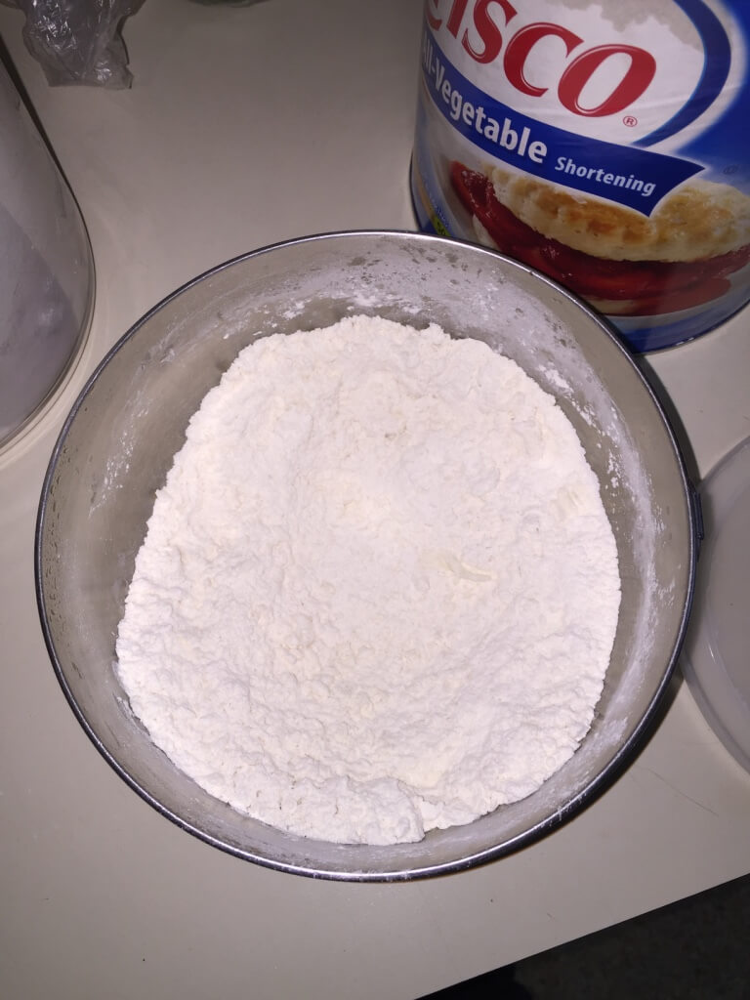
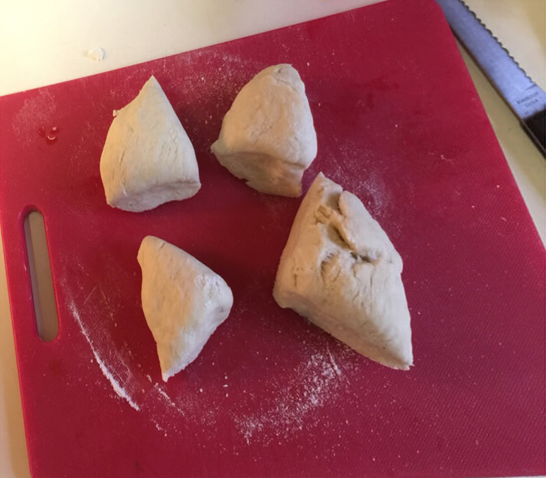

Flour Tortilla Recipe
Younger than its brother the corn tortilla, the flour tortilla has gained popularity and largely displaced the original corn tortilla in sales and popularity (in the United States, at least). More malleable and versatile than corn tortillas, flour tortillas lend themselves to a variety of dishes, including:
- Taco tortillas - disk-shaped dough that holds meat, cheese, and vegetables.
- Quesadillas - meat, cheese, and vegetables placed between two large tortillas and fried or baked.
- Burritos - large tortilla filled with meat, cheese, and vegetables that is rolled up and served, usually with a sauce.
- Chimichangas - a deep-fried tortilla
The nice thing about flour tortillas is that they are generally more elastic than corn tortillas, making them easier to make in different sizes. Basically, when you're working with a flour tortilla, there is less of a likelihood of it falling apart, which makes it a great choice for the beginner.
Tortilla Tools
Like the recipe itself, the tools needed to make tortillas are rather simple, and you'll only need a few of them.
- Mixing bowl to toss and mix ingredients
- Measuring tools
- Dough cutter to distribute the lard evenly
- Large fork to mix ingredients
- 10in pan, preferably cast iron. Larger pans required for quesadillas and burritos
- Tortilla Press and/or Rolling Pin
- Spatula
- Pastry Cutter (optional)
- Container (optional)
Flour Tortilla Ingredients
This recipe makes roughly eight tortillas. Eight is a baseline that many recipes follow, and I chose to use eight as a good number because it generally works for making tortillas for more than one person, even if two or three are leftover.
Of course, different occasions require different amounts of tortillas: cooking for one and you should be good with three or four, but for several you may need sixteen or twenty. Doubling or tripling the recipe is a good idea depending on how many guests you have, meaning the recipe earmarks four tortillas per person (better to have too many than not enough!). However, I also include a tortilla ingredient calculator, which you can use to calculate precise ingredients for your recipe.
Prep time: 20 minutes
Cook time: 5 minutes
Calories per Flour Tortilla: About 100 calories
- 2 cups all-purpose flour
- ½ teaspoon salt
- ¾ warm water
- ¼ lard or shortening
- 1 teaspoon baking soda
Instructions
- First, combine your flour, salt, and baking powder in your mixing bowl. Swirl the bowl or stir it to combine the ingredients.
- Next, add your lard or shortening to the mixture. Use a pastry cutter to divide the lard into the mixture evenly. When your done, the mixture should resemble crumbs. 
- Form a well in the center of your dough mixture. Next, heat your water in a microwave or on a stovetop. The water should not be boiling or approach boiling. It should be warmer than room temperature but not hot. Add the water to the mixture.
- Mix the water and mixture together using a large fork. The mixture should begin to bind without much trouble.
- Turn the dough out onto a floured surface. Work and mildly knead the dough until all the mixture's pieces have been incorporated. Sprinkle additional flour if necessary. The dough should be springy but not too damp. Work dough into a ball.
- Cover the dough with the mixing bowl and allow it to rest for 15 to 30 minutes.
- Use a pastry cutter to divide the dough ball in half, then quarters and eighths, depending on the amount of tortillas you've chosen to make. 
- Take each individual dough piece and form into a small ball, about the size of a golf ball or larger. Next, flatten the ball with your palm on a floured surface and sprinkle with flour. Take your rolling pin and gently roll the ball out into a disk. The disk doesn't have to be perfect in shape.
- For the tortilla press - cover each half of the press with plastic wrap. Sprinkle the wrap with flour, add the dough ball to the center of the press, and press down firmly. You should have a disk-shaped tortilla, but sometimes you may need to finish the job with a rolling pin. N.B., the tortilla press is better suited for the corn tortilla.
- Finally, heat a griddle or cast iron stove on high heat. Once the griddle is hot, add your tortilla. Once you see your dough form little air pockets and rise, flip the tortilla and allow the other side to cook (15 - 30 seconds). Once done, transfer the tortilla to a holder or container to keep warm. Repeat process for each tortilla.